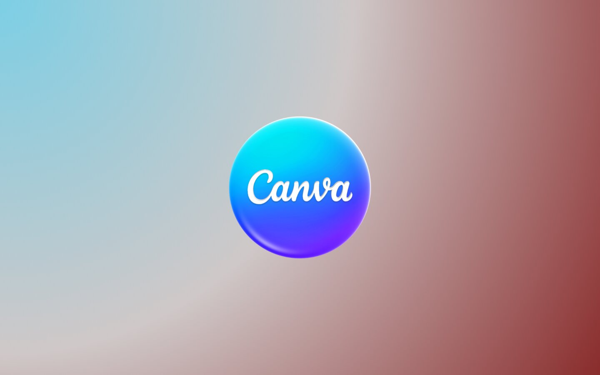

Organizzazione Eventi
In grado di pianificare e gestire manifestazioni culturali e festival.
Padronanza della lingua per contesti accademici e professionali internazionali
Utilizzo del linguaggio per l'analisi dei dati, l'automazione e lo sviluppo di progetti digitali umanistici
Livello intermedio nella creazione di contenuti grafici, infografiche e materiali di comunicazione per la valorizzazione di progetti culturali e sociali.

Specializzazione nella digitalizzazione del Terzo Settore e nell'applicazione di tecnologie per il benessere della collettività
In grado di pianificare e gestire manifestazioni culturali e festival.

In grado di valorizzare centri di ricerca e parchi letterari.

In grado di curare i rapporti tra istituzioni, fondazioni e pubblico.

In grado di coordinare progetti culturali per enti pubblici e privati.

In grado di operare negli uffici di relazioni con il pubblico.

In grado di assistere registi e sceneggiatori nella fase creativa

In grado di collaborare a progetti cinematografici e radiotelevisivi.

In grado di supportare la stesura di testi per il settore dello spettacolo.

In grado di assistere direttori artistici e scenografi.

In grado di supportare la realizzazione di rappresentazioni teatrali.

In grado di classificare opere d'arte e modelli museali.

In grado di organizzare dati derivanti dalla ricerca archeologica.
Attraverso il percorso magistrale in Digital Humanities per l'industria culturale, Giuseppe Amodei sta perfezionando un profilo ibrido in grado di integrare l'analisi umanistica con le più avanzate tecnologie digitali. Grazie a questa specializzazione, sarà in grado di operare nei seguenti ambiti:
In grado di sviluppare e gestire architetture web e piattaforme digitali complesse.
In grado di pianificare strategie digitali e gestire contenuti per community online.
In grado di intercettare le esigenze degli utenti attraverso prodotti analytics e strategie mirate.
In grado di progettare e sviluppare videogiochi e soluzioni interattive a scopo educativo.
In grado di scrivere micro-testi e interfacce per ottimizzare l'esperienza utente su siti e app.
In grado di modellare e collaudare banche dati per archivi, musei e biblioteche.
In grado di innovare le modalità di lavoro tramite l'integrazione di software e tool digitali.
In grado di gestire la conservazione a lungo termine di artefatti storici su supporti digitali.
In grado di curare contenuti online, blog aziendali e headline di forte impatto.
In grado di svolgere correzione bozze e revisione di testi multimediali e audiovisivi.
In grado di operare in redazioni digitali curando la pubblicazione e l'editing di articoli.
In grado di operare in ecosistemi digitali integrati e gallerie d'arte virtuali.
Puoi scrivergli direttamente all'indirizzo:
giuseppe.amodei@community.unipa.it
oppure utilizza i tasti rapidi qui sotto per inviargli un'email o scaricare il suo curriculum.